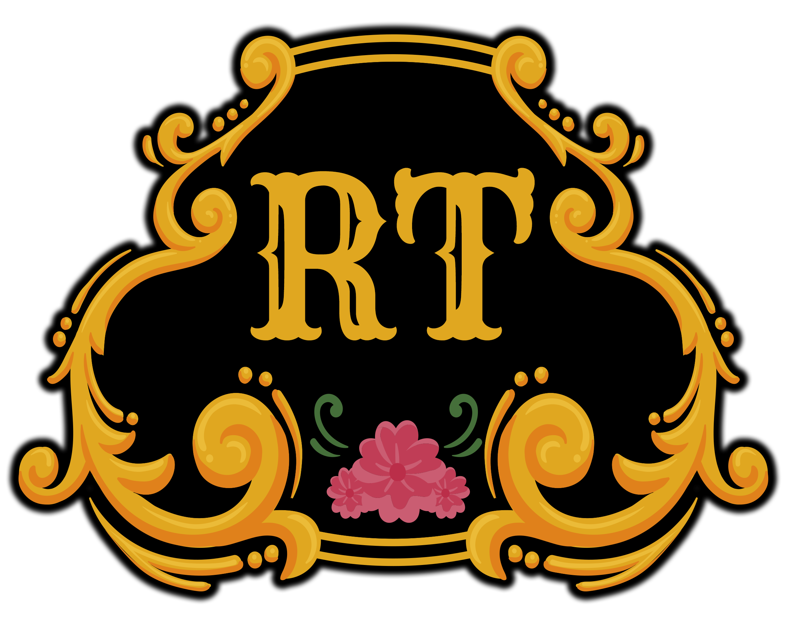

Radio Tanda
Nonstop Argentine tango tandas for you!
(see full schedule)
This is an expensive experiment. Please
help support it!
Made with
💛
by
Jessica Schilling
|
GitHub
Schedule
Radio Tanda operates on three eight-hour blocks daily for the best experience across time zones.
BLOCK ONE
Alternative Tandas (3-song TTMTTV, with cortinas):
01:00-02:15 UTC / your local time
Mini Practica (single-song TTMTTV, no cortinas):
02:15-03:00 UTC / your local time
Traditional Tandas (3-song TTMTTV, with cortinas):
03:00-09:00 UTC / your local time
BLOCK TWO
Alternative Tandas:
09:00-10:15 UTC / your local time
Mini Practica:
10:15-11:00 UTC / your local time
Traditional Tandas:
11:00-17:00 UTC / your local time
BLOCK THREE
Alternative Tandas:
17:00-18:15 UTC / your local time
Mini Practica:
18:15-19:00 UTC / your local time
Traditional Tandas:
19:00-01:00 UTC / your local time